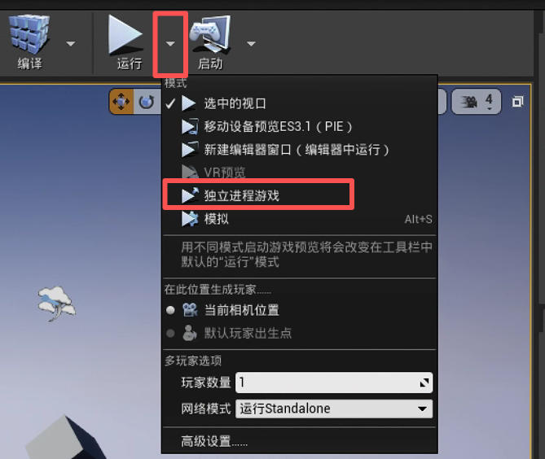
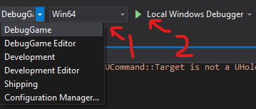

在使用 holodeck 或 holodeck-engine 时，您可能会想知道如何调试代码。
修改 holodeck 包
如果您只是修改 Python 包，只需确保 Holodeck 搜索路径中已安装兼容的包即可。
基于 master 分支
如果您基于 master 分支构建，只要不进行任何破坏性更改，您应该可以直接使用我们提供的二进制文件（holodeck.install）。
基于 develop 分支
我们不提供 develop 分支的构建版本，因此您需要自行构建引擎（构建 Holodeck 引擎）。
按照这些说明操作后，您应该可以调用 holodeck.make。
修改 holodeck-engine 项目
引擎的开发比较棘手。你可以像上面那样构建引擎并将其放置在预期的目录中，但这既慢又麻烦，而且你无法附加调试器。
以下两种方法的关键在于，引擎必须有客户端连接才能运行（即推进状态并解析输入）。
如果你已经阅读并理解了 Holodeck 通信协议，那么这一点就很容易理解了。
从虚幻编辑器启动
如果您想调试编辑器中打开的特定关卡，请从以下位置启动游戏：
- 启动游戏
在视窗上方的工具栏中，选择“运行”旁边的向下箭头->“独立进程游戏”。

在独立进程中运行意味着，即使引擎崩溃或客户端断开连接，编辑器也不会卡死或崩溃。
- 客户端附着
从 Visual Studio 启动
请确保在尝试此操作之前已烘焙好内容。
- 可选：选择关卡
如果您想启动特定关卡：
- 转到“调试”菜单 -> “Holodeck 属性” -> “调试”
- 在“命令参数”中，输入要加载的关卡名称
-
确定
-
从 Visual Studio 启动游戏（点击“运行”按钮，确保已选择“DebugGame”）。

- 客户端附着
请查看下方客户端附着。
客户端附着
引擎运行起来之后，你需要将客户端连接到它。最简单的方法是创建你自己的 HolodeckEnvironment 对象。
env = HolodeckEnvironment(
start_world=False
)
这是因为 HolodeckEnvironent 和引擎的默认 UUID（如果引擎命令行中未提供 --HolodeckUUID= 参数）均为空字符串 ""。
创建该对象后，您应该可以调用 env.tick(5000) 并移动摄像机。
如果您想要生成代理和传感器，请在 HolodeckEnvironment 的构造函数中为 scenario 选项提供一个场景配置字典（参见场景部分）。